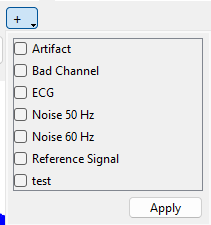

Channel Flagging
Channel Flagging¶
This section describes how to manage channel flags in the hdsemg-select application, including manual and automatic flagging methods.
Purpose of Channel Flags¶
Channel flags are used to indicate different properties of a specific channel, such as: - Artifact: The channel contains artifacts that may affect the data quality. - Bad Channel: The channel is considered faulty and should not be used for analysis. - ECG: The channel is contaminated by ECG signals. - Noise 50Hz: The channel is affected by 50Hz power line noise. - Noise 60Hz: The channel is affected by 60Hz power line noise. - Reference Signal: The channel is a reference signal. This flag will be set automatically for all reference channels.
These Flags are standard flags used in the hdsemg-select application to help users quickly identify and manage channels based on their quality and characteristics. They can be set manually or automatically based on the detected artifacts in the signal. If you want to set the flags automatically, please refer to the section Automatic Channel Flagging There is also a possibility to set custom flags, which can be used for specific purposes or personal preferences. They can only be set manually and can be configured in the Settings dialog (see Application Settings).
Manual Channel Flagging¶
If you want to manually set flags for a channel, follow these steps:
| Step | Description | Image |
|---|---|---|
| 1 | Locate the channel you want to flag. Use the grid navigation buttons or arrow keys to select the desired channel. |  |
| 2 | Click the "+" button below the figure to open the label dialog. | |
| 3 | In the dialog, select a label from the dropdown and click "Apply". |  |
| 4 | After applying the label, it will appear below the figure in the channel widget. |  |
To get a custom flag into the dropdown, you need to add it in the settings dialog. For more information, see Application Settings. Afterwards, you can select it in the label dialog as shown above.
Automatic Channel Flagging¶
To run the automatic channel flag algorithm, please make sure that you have set the Automatic Channel Falgging Settings in the Application Settings. Otherwise, the application will remind you.
After you have set the settings, you can run the automatic channel flagging algorithm by starting it from the menu "Automatic Selection" -> "Suggest Artifact Flags...". The application will then analyze the signal and suggest flags for the channels based on the configured settings (for all interested in how we are suggesting the flags please take a look at the algorithmn description). Once the algorithm has finished, the application will indicate success by showing the following dialog and the flags will be displayed in each channel widget and the detail view. You can then review the suggested flags and adjust them manually if necessary.

What happens with the flags after you have set them and export your data?¶
The flags you set manually or automatically will be stored in the metadata of the channel and will be included in the exported data. This allows you to keep track of the quality of each channel and to filter out channels that are not suitable for analysis.
When you export the data, the flags will be included in the JSON file, allowing you to easily identify which channels are flagged as artifacts, bad channels, or reference signals. This is particularly useful for further analysis or when sharing the data with others. For more information about the JSON file export, see Application Output.
Automatic Channel Flagging: under the hood¶
The automatic channel flagging algorithm uses a combination of frequency and variance thresholds to identify channels that may contain artifacts or noise. The algorithm works as follows:
1. Frequency-Based Noise Detection¶
The algorithm checks for common noise sources in the frequency domain, such as:
- 50 Hz interference (e.g. powerline noise in Europe)
- 60 Hz interference (e.g. powerline noise in North America)
It performs a spectral analysis of each channel and looks for sharp peaks at or near these frequencies. If the energy around a target frequency is significantly higher than the surrounding background spectrum, the channel is flagged (e.g. NOISE_50, NOISE_60).
2. Variance-Based Artifact Detection¶
In addition to frequency checks, the algorithm inspects each channel’s signal variance. A channel is flagged as an ARTIFACT if its variance exceeds a configurable threshold, which may indicate instability such as:
- Sudden signal jumps
- Excessive baseline drift
- Electrode movement or loose contact
3. Reference Signal Identification¶
Channels that are defined as reference electrodes in the dataset metadata are automatically labeled as REFERENCE_SIGNAL. These are not evaluated for noise or artifacts and are excluded from EMG flag statistics.
Summary¶
Once all channels are evaluated:
- A list of suggested flags is generated for each affected channel.
- The number of flagged EMG and reference channels is reported.
- These suggestions can be reviewed and manually adjusted in the dashboard.
The detection behavior can be customized in the Auto-Flagger settings dialog, where you can enable/disable specific checks and set thresholds to suit your data quality and analysis goals.